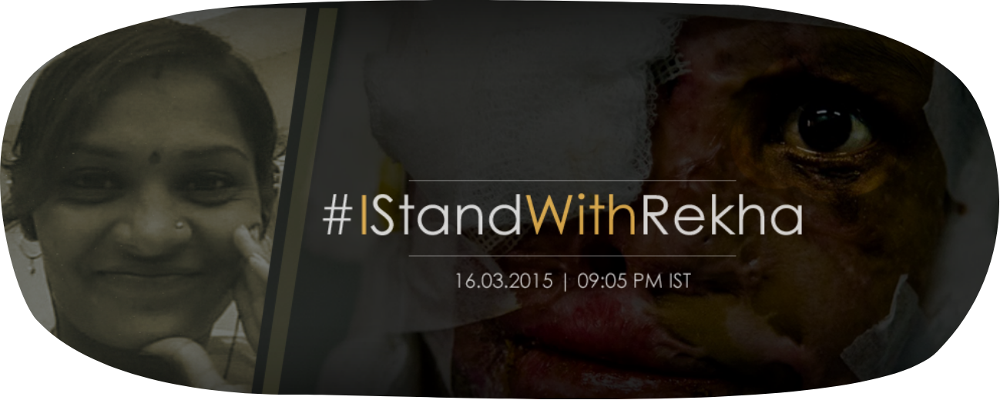

We are here to make a change in society. To do social inclusion of acid survivors
.For this , we have to make people aware by arranging campaigns,Ted Talks and conferences.
We are available for making a change in society.
E-MAIL US AT: info@leharfoundation.org
CONTACT NO: 040-23446701
Rekha was attacked by her own husband with acid on the 2nd of October 2013. From when she was attacked, till today we have tried to provide for her every need. Rekha was gravely disfigured in the attack and left traumatised. Rekha’s parents passed away soon after the attack and her two-year-old daughter couldn’t recognize her own mother. Her brother and sister were victims of social stigma that came with such a crime and washed their hands of her. We shifted Rekha from a government hospital burns ward where patients die faster from infection than their injuries, to a charitable private hospital. Rekha underwent multiple surgeries and seemed to be recovering but we knew she had endless surgeries still ahead of her.
Rekha needed a few months break before we could continue with her treatment so she was shifted back to her village. Rekha was Due to arrive back in November 2014 but we somehow lost touch with her, as her phone wasn’t working. After a few months of trying to get her back to the hospital, we finally managed to convince her brother to drop her of. We were horrified when we saw Rekha. Not only had Rekha slipped into a deep depression that affected her psychologically but was also suffering from the following;
1. Wounds on her head and face are infected
2. Her food pipe and intestines have become ulcerated
3. She is suffering from jaundice
4. She has blood discharge in her urine, indicating infection in her kidney or uterus (she was pregnant at the time of the attack, and the foetus got aborted due to the shock following the attack)
5. She is suffering from mental depression and instability
Today Rekha is in critical condition and we can’t help but wonder why the government hasn’t helped her so far. The chairperson of the state women’s commission has visited Rekha, but she is yet to get even a single rupee of help from the state government, even two years after the acid attack. Does our system not have any value for human life? The compensation, which she should have rightfully received soon after her attack, still hasn’t been given to her and it’s been a year and half since her attack already.
With no further options left we have collaborated with the Logical Indian to bring this matter to the public view as well as have it addressed by the government. We are relying on the media to help bring this to everyone’s attention because no one should ever have to be in this position. An open letter has been issued to the government but we are still waiting on a response even though time is of the essence and someone’s life is at stake. We truly believe in the power of the media and the people. The letter reads as follows;
To,
The Hon’ble Minister, Ministry of Home Affairs/ Women and Child Development
Subject: Timely release of compensation to acid attack survivors.
Dear Sir/Ma’am,
We are writing to you today to bring to your attention the lack of efficiency with which our system handles the release of government compensation.
According to Section 357 C, all hospitals, public or private, whether run by central government, state government, local bodies or any other entity, shall immediately provide free first-aid or medical treatment to the victims. At present, government hospitals (where treatment is free) have a higher death rate due to infections even before a patient can be taken in for surgery. Through this letter, we are just asking you to ensure that these survivors get what is rightfully theirs and that they get it on time. If the compensation is released on time, the survivors could get better treatment as well as trauma counselling, which is not only crucial but also vital when dealing with trauma of this magnitude. Rehabilitation of such survivors is also a very important point the government needs to look into as survivors of such crimes have to deal with their own share of social stigma. One such case is that of Rekha from Bangalore who had the misfortune of being attacked by her own husband. This was by far one of the worst cases of acid attacks. Disfigured to the point that her own two-year-old daughter is frightened at the look of her own mother. The chairperson of the state women’s commission (Karnataka) has visited Rekha, but she is yet to get even a single rupee of help from the state government, even a year and half after the acid attack.
We request you to take strict and prompt action towards making sure that Rekha gets what is rightfully hers. We also want this to not be a one of case but make sure that this aids the implementation of the compensation scheme in the future as well.
There is no point of a scheme if people don’t benefit from it. If this issue is not handled today, it will only escalate tomorrow. We look forward to your response on this matter and hope that no other survivor will ever be in the condition that Rekha is in today.
Thanks -The Logical Indian.
We have full faith that if everyone comes together we will get answers. This is not just about Rekha, it’s about numerous survivors that find themselves in her position. We have the opportunity to be a voice for all of them today and we shouldn’t waste it.